{kind=link}
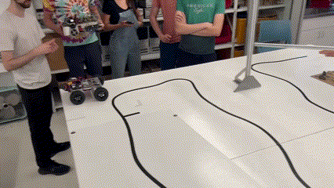
My team and I built an autonomous car for a robot competition. We designed the electrical mechanical and software systems for the robot.
{kind=link}
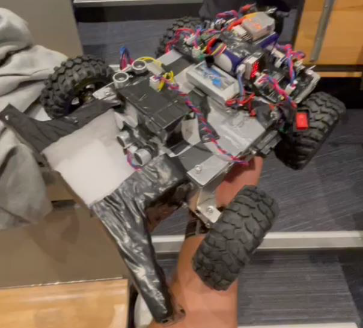
- Electrical System:
- Power
- `I used one 16V LiPo battery to power our two DC motors and servo motor, a buck converter was used to step down the voltage for the servo motor which was used for steering the front wheels while the DC motors were used to drive the two back wheels.
- I used an 8V LiPo batter to power our Blue Pill STMN32F103C8T6 and sensors, 5V and 3V3 linear regulators were used to supply the needed voltage for each component
- H-bridges
- I built two H-bridge circuits for controlling our DC motors using optically isolated PWM signals from the Blue Pill
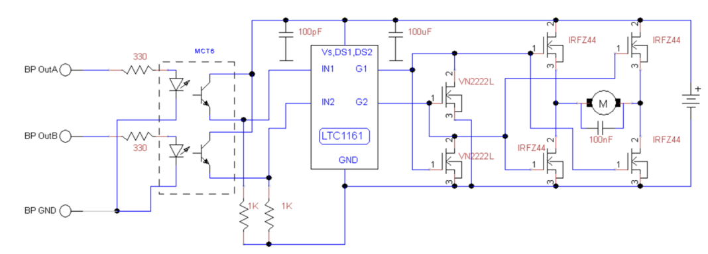
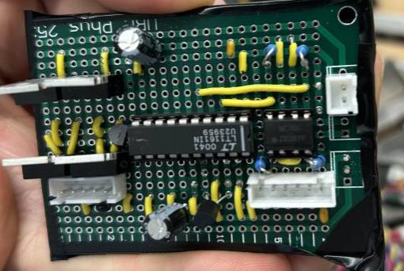
- Sensors
- IMU & Magnetometer: I2C communication was used for the IMU and Magnetometer. These sensors were used to determine the orientation of the car.
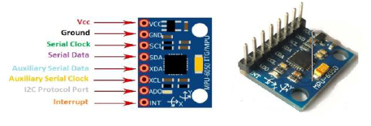
- Reflectance Sensor: used on the inside of one of the back wheels as an optical encoder to measure the distance travelled by the robot
- Two Ultrasonic Sensors
- The first sensor was placed on top of the robot facing upwards to detect whenever we pass under the bridge
- The second sensor was placed on the front of the car to detect the opponent's car to avoid collisions
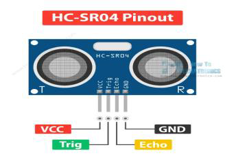
- Distance Sensor: placed on the left side of the robot to measure the distance from the ramp
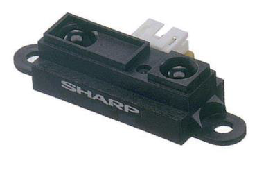
- IMU & Magnetometer: I2C communication was used for the IMU and Magnetometer. These sensors were used to determine the orientation of the car.
- Power
{kind=link}
{kind=link}
{kind=link}
{kind=link}
{kind=link}
- Mechanical System:
- Aluminum Sheet Metal was used to build the chassis
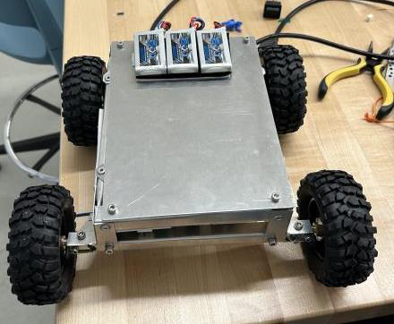
- Two-wheel drive
- One DC motor was used to drive each back wheel with software differential steering used to make tight turns and compensate for the performance difference between the two motors
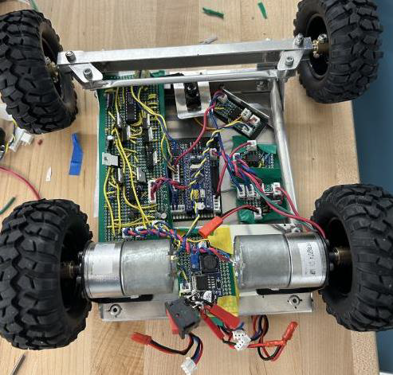
- One DC motor was used to drive each back wheel with software differential steering used to make tight turns and compensate for the performance difference between the two motors
- Ackermann Steering: We designed an Ackermann steering system with a servo motor
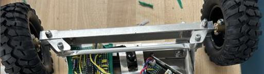
- Calculated the maximum weight allowed to sustain the force from jumping over an 8-inch cliff without a suspension system
- I made the first CAD prototype for the car using Onshape
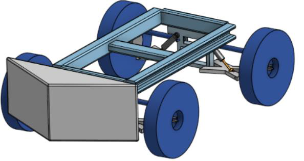
- Aluminum Sheet Metal was used to build the chassis
{kind=link}
{kind=link}
{kind=link}
{kind=link}
- Software System:
- We created a map of the track using Desmos and created a route for the robot to follow
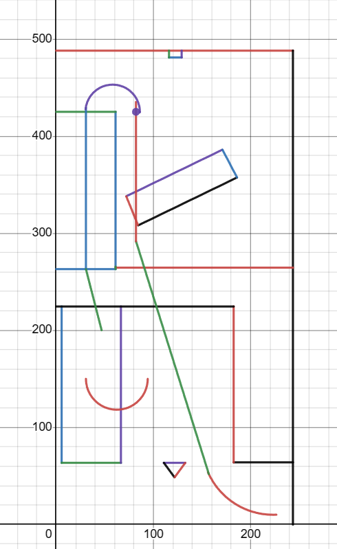
- Sensors input:
- Data from the rotary encoder was used to calculate the distance travelled
- Then data from the Magnetometer was used to calculate the orientation of the robot
- Therefore we were able to calculate the X and Y displacement of the robot since we knew the direction in which the robot moved in
- Knowing the X and Y displacement means the position of the robot on the map was known and it could follow the Desmos track
- The accelerometer was used to measure the acceleration in the Z-axis to determine when the robot jumped from the cliff
- The Sonar was used to detect when the robot passed under the bridge, this data was used to recalibrate the Y position to remove any accumulated errors from the Y position data
- The Distance sensor on the side of the robot was used to measure the distance to the ramp, this data was used to recalibrate the X position of the robot for the same reason
- We split the route into multiple zones and used zonal PID
- There was a portion of the map where there were rocks that made the robot shake, we used data from the IMU and Magnetometer to measure the variance in the angle to detect when the robot was on rocks to make it slow down to discount in air wheel rotations from the distance travelled
- We created a map of the track using Desmos and created a route for the robot to follow
{kind=link}